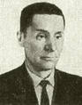
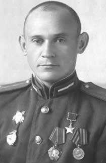
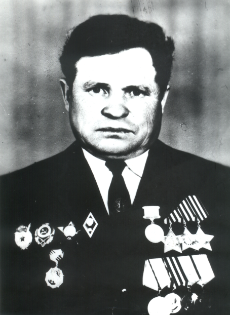
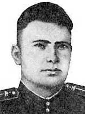
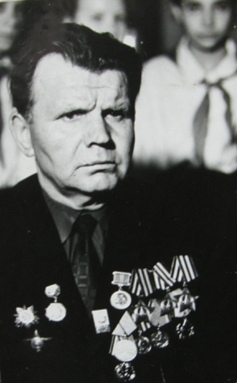

Маменков Николай Трофимович

Полный кавалер ордена Славы
Дата рождения: 22.05.1911
Место рождения: д. Дубно Старинской волости Чериковского уезда Могилёвской губернии (ныне Славгородского района Могилёвской области, Беларусь).
Должность и звание:старший разведчик 998-го пушечного артиллерийского полка 3-й артиллерийской дивизии прорыва 5-й гвардейской армии 1-го Украинского фронта, ефрейтор.
Награды: орден Славы 1 степени (15.05.1946 г.), орден Славы 2 степени (12.04.1945 г.), орден Славы 3 степени (06.02.1945 г.), медаль «За Отвагу» (22.07.1943 г.)
Краткая биография
Родился в семье крестьянина. Окончил 4 класса школы. Жил в деревне Благодать (Славгородский район), работал в колхозе «Червоный передовик». В 1937 году переехал с семьёй в Кемеровскую область. С 1938 года жил в селе Красный Яр (Прокопьевский район). Работал заведующим фермой и бригадиром полеводческой бригады в колхозе имени В. И. Чапаева. В Красной Армии с мая 1941 года. Проходил переподготовку в артиллерийской части в городе Юрга. В боях Великой Отечественной войны с июня 1941 года. Воевал на Западном (октябрь 1941 года – июль 1943 год), Брянском (июль – сентябрь 1943 год), и 1-м Украинском (декабрь 1943 год – апрель 1945 год) фронтах. Участвовал в Московской битве, Ржевско-Сычёвской операции, боях на жиздринском направлении, Ржевско-Вяземской, Орловской, Брянской, Житомирско-Бердичевской, Проскуровско-Черновицкой и Львовско-Сандомирской операциях, боях на Сандомирском плацдарме, Сандомирско-Силезской, Нижнесилезской, Верхнесилезской и Берлинской операциях. В 1945 году демобилизован. Жил в посёлке Большая Талда Прокопьевского района, где работал председателем колхоза имени В. И. Чапаева. Умер 30 июля 1991 года.
Информация о подвиге в ходе ВОВ
16 января 1945 года в бою за польский город Щекоцины разведал замаскированную вражескую батарею, скорректировал огонь советской артиллерии, и вражеская батарея была разбита. 17 февраля 1945 года обозначил на карте огневые точки противника у германского населённого пункта Окклиц. На следующий день по его данным была проведена успешная артиллерийская подготовка. 19 апреля 1945 года близ немецкого населённого пункта Мюльрозе обнаружил четыре вражеских орудия и подготовленные к атаке бронетранспортеры с пехотой. По его указаниям вражеская батарея была подавлена, бронетранспортеры и пехота подверглись огневому удару. Маменков получил ранение, но поля боя не покинул.
Шульц Михаил Михайлович

Герой Советского Союза
Дата рождения: 09.05.1924
Место рождения: г. Черемхово, Иркутской области.
Должность и звание: помощник командира стрелкового взвода 207-го гвардейского стрелкового полка 70-й гвардейской стрелковой дивизии (13-я армия, Центральный фронт), подполковник.
Награды:орден Ленина и медаль «Золотая Звезда» (16.10.1943), орден Отечественной войны II степени (03.09.1943).
Краткая биография
В начале 1930-х годов его семья переехала в город Прокопьевск, где Михаил Шульц окончил среднюю школу. После окончания школы работал чернорабочим, а затем токарем механического цеха шахты № 3-3 бис - «Центральная».В Красной Армии с 1942 года. На фронте в Великую Отечественную войну с марта 1943 года. С марта 1943 года воевал на Центральном фронте.
Михаил Шульц особо отличился при форсировании 24 сентября 1943 года в районе Новошепеличи Чернобыльского района Киевской области Украины рек Припять и Днепр.
После войны продолжил службу в армии. В 1945 году окончил Ленинградское пехотное военное училище, а в 1953 году курсы усовершенствования офицерского состава. С 1961 года уволен в запас в звании подполковника. После военной службы жил и работал в Прокопьевске, потом в Железногорске Красноярского края. Умер 10 октября 1982 года.
Информация о подвиге в ходе ВОВ
Одним из первых переправившись через Припять в составе разведывательной группы, Михаил Михайлович ночью отправился в разведку. Уничтожив пулемётный расчёт и завладев вражеским пулемётом, Михаил Шульц захватил и доставил в своё подразделение обоз с боеприпасами и миномёт.Когда гитлеровцы предприняли 8 ожесточённых контратак на позиции батальона, наступая при поддержке танков, Михаил Шульц лёг за трофейный пулемёт и отбивал одну атаку за другой. Фашистские танки несколько раз проходили над его окопом, а во время одной из атак вражеские пехотинцы предприняли попытку с тыла обойти пулемётную точку Шульца, но он продолжал сражаться и разить противника, прикрывая действия советских разведчиков.
Нехорошков Владимир Григорьевич

Полный кавалер ордена Славы
Дата рождения: 23.04.1925
Место рождения: с. Большевик, ныне Алтайского края
Должность и звание: заместитель командира взвода пешей разведки 110-го гвардейского Брестского стрелкового полка (38-я гвардейская Лозовская Краснознаменная стрелковая дивизия, 70-я армия, 1-й Белорусский фронт), старшина
Награды: орден Красной Звезды (15.09.1944), орден Славы I степени (29.06.1945), орден Славы II степени (21.02.1945), орден Славы III степени (15.07.1944), медаль «За отвагу» (24.07.1944), «За победу над Германией в Великой Отечественной войне 1941-1945 гг».
Краткая биография
Родился в семье крестьянина. Окончил 7 классов сельской школы. Работал в колхозе учетчиком, продавцом сельпо, секретарем сельсовета. В январе 1943 г. призван в ряды РККА и направлен в Новосибирское военно-пехотное училище. В составе 110-го гвардейского полка 38-й гвардейской стрелковой дивизии прошел всю войну. Был бронебойщиком, наводчиком противотанкового ружья, разведчиком взвода пешей разведки. Освобождал Белоруссию, форсировал Западный Буг, участвовал в Восточно-Прусской и Восточно-Померанской наступательных операциях. Был трижды ранен. День Победы встретил на Эльбе. Участвовал в Параде Победы на Красной Площади в Москве 24 июня 1945 г. В октябре 1945 г. демобилизован. Работал инструктором райкома партии. В 1966 г. окончил Высшую заочную партшколу при ЦК КПСС в Омске. В Прокопьевске работал секретарем парткома совхоза «Прокопьевский», учителем истории и обществоведения в средней школе этого совхоза, затем директором. Умер 18 января 2001 г.
Информация о подвиге в ходе ВОВ
Особо отличился в боях на территории Польши и Германии. В бою при прорыве обороны противника на Наревском плацдарме близ населенного пункта Цехнувка (Польша) в числе первых ворвался в траншею врага, в упор расстрелял трехсолдат, одного взял в плен. 28.01.1945г. при отражении контратаки противника разведчик зашел гитлеровцам в тыл и неожиданно ударил из автомата. Несколько нападавших сразил, шестерых взял в плен. 05.05.1945 г. в районе населенных пунктов Пинков и Демен (Германия), скрытно подполз к вражеской позиции, гранатами уничтожил пулемет с прислугой, что позволило разведгруппе разгромить боевое охранение противника, взять в плен свыше 10 гитлеровцев.
Мартехов Василий Федорович

Герой Советского Союза
Дата рождения: 01.04.1917
Место рождения: рудник Бигрон в штате Огайо, Соединенные Штаты Америки.
Должность и звание: командир танковой роты 27-й отдельной гвардейской танковой бригады, гвардии старший лейтенант.
Награды: орден Ленина и медаль «Золотая Звезда» (26.10.1943) , орден Красной Звезды (15.01.1942, 06.11.1942).
Краткая биография
Родился в семье шахтёра-эмигранта из России. В дореволюционные годы родители Василия Фёдоровича уехали в Америку для работы на рудниках. После рождения Василия вся семья вернулась на Родину. В городе Прокопьевске отец поступил работать на шахту. Василий после окончания школы тоже пришёл на шахту. В 1940 году призван в Красную армию. В 1941 году окончил Харьковское танковое училище.
На фронте с июля 1941 года. Участвовал в боях под Сталинградом. На станции Морозовка в составе группы из 5-ти танков ворвался на немецкий аэродром и в упор расстреливал самолёты противника. 19 ноября 1942 года его рота после быстрой атаки смогла первой ворваться в расположение обороны противника. Участник сражения на Курской дуге под Белгородом. Погиб 12 июля 1943 года в бою у села Нижний Ольшанец. Был похоронен на поле боя, позднее его прах был перенесён в братскую могилу в селе Вознесеновка.
Информация о подвиге в ходе ВОВ
12 июля 1943 года роте офицера Мартехова приказали наступать на Харьковском направлении. Танкисты пошли вперёд. В районе села Маслова Пристань навстречу им противник бросил 20 танков и штурмовых орудий. По команде командира советские танки врезались в ряды вражеских. В результате советская танковая рота уничтожила 3 танка, 6 самоходный артиллерийских установок (САУ), 3 миномета, 8 пушек и до 300 солдат и офицеров противника.
На боевом счету Василия Мартехова числилось 14 уничтоженных танков, 22 орудия, 19 минометов, 16 автомашин, 7 пулемётных точек и свыше 800 солдат и офицеров противника.
Попов Семен Ефремович

Полный кавалер ордена Славы
Дата рождения: 10.03.1917
Место рождения: с. Кандаковка Уфимской губернии, (ныне - Бирского района Республики Башкортостан РФ)
Должность и звание: помощник командира разведывательного отделения 8-й мотострелковой Бобруйской бригады (9-й танковый Бобруйско-Берлинский Краснознаменный ордена Суворова корпус, 1-й Белорусский фронт),сержант
Награды: орден Отечественной войны Iстепени (22.10.1943),орден Красной Звезды (20.07.1943), орден Славы Iстепени (15.05.1946), орден СлавыIIстепени (08.03.1945), орден Славы III степени (10.09.1944), медаль «За отвагу» (30.09.1943)
Краткая биография
Родился в семье крестьянина. Окончил начальную школу. Работал лесорубом в Усть-Барзасском леспромхозе Новосибирской области. 23 мая 1942 г. призван в ряды РККА Барзасским РВК. С августа 1942 г. воевал под Сталинградом, на Орловско-Курской дуге, освобождал Белоруссию, участвовал в Висло-Одерской операции. При форсировании Одера 17.04.1945 г. был тяжело ранен. Победу встретил в госпитале польского города Лодзь. С войны вернулся инвалидом 3-й группы. В 1949 г. приехал в Прокопьевск, трудился старшим рабочим в спецконторе по тушению подземных пожаров, крепильщиком на шахте «Центральная», плотником в Головной автобазе. Ушел из жизни 8 ноября 1987 г.
Информация о подвиге в ходе ВОВ
13 сентября 1944 года младший сержант С. Е. Попов под покровом темноты подполз к расчету немецкой пушки и забросал ее гранатами, бежавших немцев расстрелял из автомата. 27 июля 1944г. с группой захвата проник в расположение противника у населенного пункта Яново (южнее г.Белосток, ныне - Польша), где уничтожил до 15 вражеских солдат, а 8 взял в плен. В ночной разведке близ г.Радом (Польша), 14.01.1945г. сержант Попов и разведчики забросали гранатами вражескую казарму, истребив 40 гитлеровцев, часового взяли в плен.
Назад